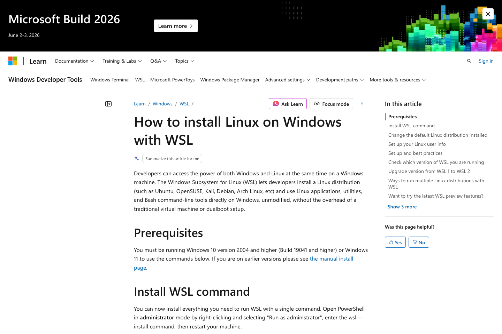

먼저 확인
- Windows 10 2004 이상 또는 Windows 11
- 관리자 권한으로 PowerShell 실행 가능
- 재부팅 가능 상태
Tool Guide
Windows 사용자라면 WSL 설치 권장. 가장 쉬운 방법은 관리자 권한 PowerShell에서
wsl --install 실행
먼저 확인
가장 쉬운 설치 방법
wsl --install필요한 기능 켜기, Ubuntu 배포판 설치까지 한 번에
Step 1
명령 끝난 뒤 재부팅. 다시 로그인하면 Ubuntu 초기 설정 창이 열릴 수 있음.

Step 2
Linux용 사용자 이름과 비밀번호 입력. Windows 계정과는 별개. 기억하기 쉬운 값으로 설정.
Step 3
wsl -l -v배포판 목록과 버전 표시되면 정상. 기본 목표는 WSL 2 상태 확인.
Step 4
git --version
node -v
npm -v
python3 --version수업 기준 핵심 4개, 안 되면 WSL 안쪽에 다시 설치
막힐 때 1
wsl --install 이 도움말만 보일 때온라인 배포판 목록 먼저 보기, 그다음 Ubuntu 지정 설치
wsl --list --online
wsl --install -d Ubuntu막힐 때 2
0.0%에서 멈출 때 사용할 웹 다운로드 명령
wsl --install --web-download -d Ubuntu수업용 권장 습관
공식 링크